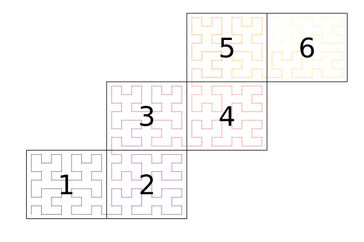

Topologies
A Topology determines the ordering and connections between elements of a mesh.

Types
ClimaCore.Topologies.AbstractTopology — Type
AbstractTopologyAbstract supertype of topologies, which define the connectivity of the elements of a mesh. Subtypes: IntervalTopology and Topology2D.
Subtypes implement the following interface:
nelemsdomain(topology::AbstractTopology)meshnlocalelemsnneighborsnsendelemsnghostelemslocalelemindexvertex_coordinatesopposing_faceface_node_indexinterior_facesghost_facesvertex_node_indexlocal_neighboring_elementsghost_neighboring_elementslocal_verticesghost_verticesneighborsboundary_tagsboundary_tagboundary_faces
ClimaCore.Topologies.IntervalTopology — Type
IntervalTopology(context::ClimaComms.SingletonCommsContext, mesh::Meshes.IntervalMesh)
IntervalTopology(device::ClimaComms.AbstractDevice, mesh::Meshes.IntervalMesh)Sequential topology on a Meshes.IntervalMesh. Only a SingletonCommsContext is supported. Construction is memoized in Cache.OBJECT_CACHE.
Fields
context: TheClimaCommscontext on which the topology is defined.mesh: TheIntervalMesh.boundaries:NamedTuplemapping boundary names to boundary tags; empty for a periodic domain.
ClimaCore.Topologies.Topology2D — Type
Topology2D(
context::ClimaComms.AbstractCommsContext,
mesh::Meshes.AbstractMesh{2},
elemorder = Meshes.elements(mesh),
elempid = nothing,
orderindex = Meshes.linearindices(elemorder),
)Distributed topology for 2D meshes. elemorder is a vector or other linear ordering of Meshes.elements(mesh), and orderindex its inverse. Elements are partitioned across processes in contiguous blocks of elemorder; elempid must be nothing (a user-supplied partition is not supported). Construction is memoized in Cache.OBJECT_CACHE.
Elements are referred to in several ways:
elem: an element of themesh, often aCartesianIndex.gidx: "global index", an enumeration of all elements, withelemorder[gidx] == elemandorderindex[elem] == gidx.lidx: "local index", an enumeration of the elements local to this process, withlocal_elem_gidx[lidx] == gidx.sidx: "send index", an index into the send buffer. A local element has onesidxper process it is sent to, withsend_elem_lidx[sidx] == lidx.ridx: "receive index", an index into the receive buffer of ghost elements, withrecv_elem_gidx[ridx] == gidx.
Fields
Common to all processes:
context: TheClimaCommscontext on which the topology is defined.mesh: The mesh on which the topology is constructed.elemorder:elemorder[gidx]is the element with global indexgidx.orderindex: The inverse ofelemorder:orderindex[elemorder[gidx]] == gidx.elempid:elempid[gidx]is the process id owning elementgidx.
Specific to this process:
local_elem_gidx: The global indices of the elements local to this process.neighbor_pids: Process ids of the neighboring processes.send_elem_lidx: Local indices of the elements copied to the send buffer.send_elem_lengths: Number of elements sent to each neighboring process.recv_elem_gidx: Global indices of the elements received.recv_elem_lengths: Number of elements received from each neighboring process.interior_faces: Vector of all unique interior faces(lidx, face, olidx, oface, reversed).ghost_faces: Vector of all ghost faces(lidx, face, ridx, oface, reversed).local_vertices: The(lidx, vert)pairs of the vertices of local elements that touch no ghost element.local_vertex_offset: Index inlocal_verticesof the first pair of each unique vertex.ghost_vertices: The(isghost, idx, vert)triples of the vertices of local elements that touch a ghost element;idxis thelidxifisghostisfalseand theridxotherwise.ghost_vertex_offset: Index inghost_verticesof the first triple of each unique vertex.local_neighbor_elem: Thelidxof the neighboring local elements of each local element.local_neighbor_elem_offset: Index intolocal_neighbor_elemof the first neighbor of each element.ghost_neighbor_elem: Theridxof the neighboring ghost elements of each local element.ghost_neighbor_elem_offset: Index intoghost_neighbor_elemof the first neighbor of each element.boundaries:NamedTupleof vectors of(lidx, face)pairs for each boundary.internal_elems: Local elements (lidx) that touch no ghost element.perimeter_elems: Local elements (lidx) on the process boundary.nglobalvertices: Total number of unique vertices.nglobalfaces: Total number of unique non-boundary faces.ghost_vertex_gcidx: Global connection index of each unique ghost vertex.ghost_face_gcidx: Global connection index of each ghost face.comm_vertex_lengths:comm_vertex_lengths[i]is the number of unique vertices communicated toneighbor_pids[i].comm_face_lengths:comm_face_lengths[i]is the number of unique faces communicated toneighbor_pids[i].ghost_vertex_neighbor_loc: Positions inneighbor_pidsof the processes each unique ghost vertex is sent to, as a ragged array.ghost_vertex_comm_idx_offset: Offsets of the ragged arrayghost_vertex_neighbor_loc: ghost vertexiis sent toneighbor_pids[ghost_vertex_neighbor_loc[j]]forj in ghost_vertex_comm_idx_offset[i]:(ghost_vertex_comm_idx_offset[i + 1] - 1).repr_ghost_vertex: Representative local(lidx, vert)of each unique ghost vertex.ghost_face_neighbor_loc: Position inneighbor_pidsof the process each ghost face is communicated to.
ClimaCore.Topologies.spacefillingcurve — Function
spacefillingcurve(mesh::Meshes.AbstractCubedSphere)Return an element ordering elemorder for a cubed-sphere mesh based on a Gilbert space-filling curve through each panel.
spacefillingcurve(mesh::Meshes.RectilinearMesh)Return an element ordering elemorder for a rectilinear mesh based on a Gilbert space-filling curve.
ClimaCore.Topologies.nelems — Function
nelems(topology)Return the total number of elements in topology.
ClimaCore.Topologies.nneighbors — Function
nneighbors(topology)Return the number of neighboring processes of this process in topology.
ClimaCore.Topologies.nsendelems — Function
nsendelems(topology)Return the number of elements this process sends to its neighbors in topology.
ClimaCore.Topologies.nghostelems — Function
nghostelems(topology)Return the number of ghost elements in topology.
ClimaCore.Topologies.localelemindex — Function
localelemindex(topology, elem)Return the local index of element elem; used by distributed topologies.
ClimaCore.Topologies.face_node_index — Function
face_node_index(face, Nq, q, reversed = false)Return the node indices (i, j) of the qth node on face face, where Nq is the number of nodes in each direction. If reversed, count from the other end of the face.
ClimaCore.Topologies.ghost_faces — Function
ghost_faces(topology::AbstractTopology)Return an iterator over the ghost faces of topology. Each item is a 5-tuple of the form
(elem1, face1, elem2, face2, reversed)where elemX, faceX are the element and face numbers, and reversed indicates whether they have opposing orientations.
ClimaCore.Topologies.vertex_node_index — Function
vertex_node_index(vertex_num, Nq)Return the node indices (i, j) of vertex vertex_num, where Nq is the number of nodes in each direction.
ClimaCore.Topologies.local_vertices — Function
local_vertices(topology)Return an iterator over the interior vertices of topology. Each vertex is an iterator over (lidx, vert) pairs.
ClimaCore.Topologies.ghost_vertices — Function
ghost_vertices(topology)Return an iterator over the ghost vertices of topology. Each vertex is an iterator over (isghost, idx, vert) triples, where idx is a local index lidx if isghost is false and a receive buffer index ridx otherwise.
ClimaCore.Topologies.neighbors — Function
neighbors(topology)Return a vector of the PIDs of the neighboring processes of this process.
Interfaces
ClimaCore.Topologies.mesh — Function
mesh(topology)Return the mesh underlying topology.
ClimaCore.Topologies.nlocalelems — Function
nlocalelems(topology)Return the number of elements local to this process in topology.
ClimaCore.Topologies.vertex_coordinates — Function
vertex_coordinates(topology, elem)Return a tuple of the coordinates of the vertices of element elem (two in 1D, four in 2D).
ClimaCore.Topologies.opposing_face — Function
opposing_face(topology, elem, face)Return the face (opelem, opface, reversed) opposite face number face of element elem in topology.
opelem: The opposing element number; 0 for a boundary, negative for a ghost element.opface: The opposing face number, or the boundary face number for a boundary.reversed: Whether the opposing face has the opposite orientation.
ClimaCore.Topologies.interior_faces — Function
interior_faces(topology::AbstractTopology)Return an iterator over the interior faces of topology. Each item is a 5-tuple of the form
(elem1, face1, elem2, face2, reversed)where elemX, faceX are the element and face numbers, and reversed indicates whether they have opposing orientations.
ClimaCore.Topologies.boundary_tags — Function
boundary_tags(topology)Return a Tuple or NamedTuple of the boundary tags of topology. A boundary tag is an integer that uniquely identifies a boundary.
ClimaCore.Topologies.boundary_tag — Function
boundary_tag(topology, name::Symbol)Return the boundary tag of topology for the boundary named name. A boundary tag is an integer that uniquely identifies a boundary.
ClimaCore.Topologies.boundary_faces — Function
boundary_faces(topology, boundarytag)Return an iterator over the faces of topology on the boundary with tag boundarytag. Each item is an (elem, face) pair.
ClimaCore.Topologies.local_neighboring_elements — Function
local_neighboring_elements(topology::AbstractTopology, lidx::Integer)Return an iterator over the local element indices of the local elements that are neighbors of the local element lidx in topology, excluding lidx itself.
ClimaCore.Topologies.ghost_neighboring_elements — Function
ghost_neighboring_elements(topology::AbstractTopology, lidx::Integer)Return an iterator over the receive buffer indices (ridx) of the ghost elements that are neighbors of the local element lidx in topology.